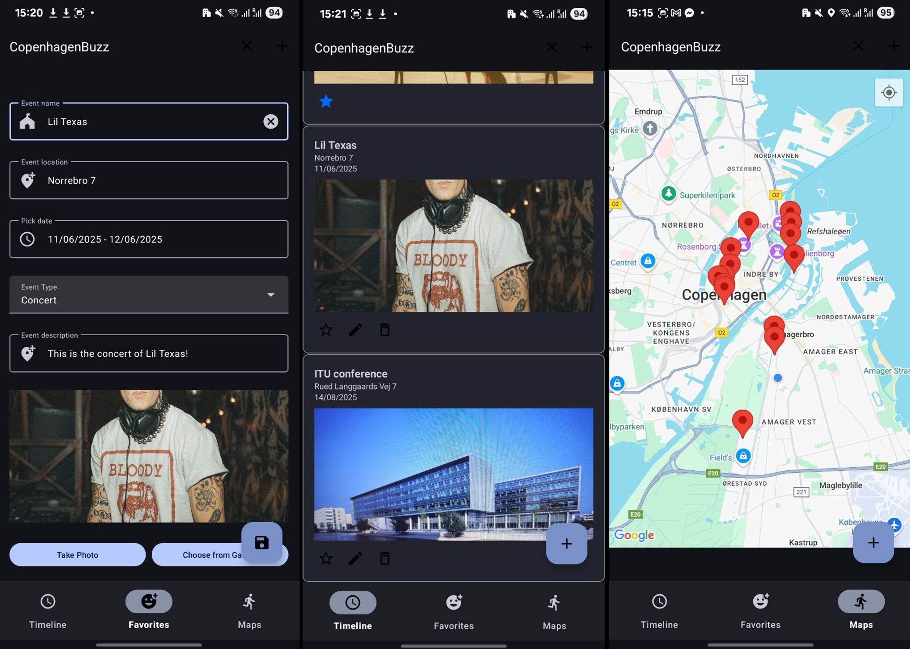
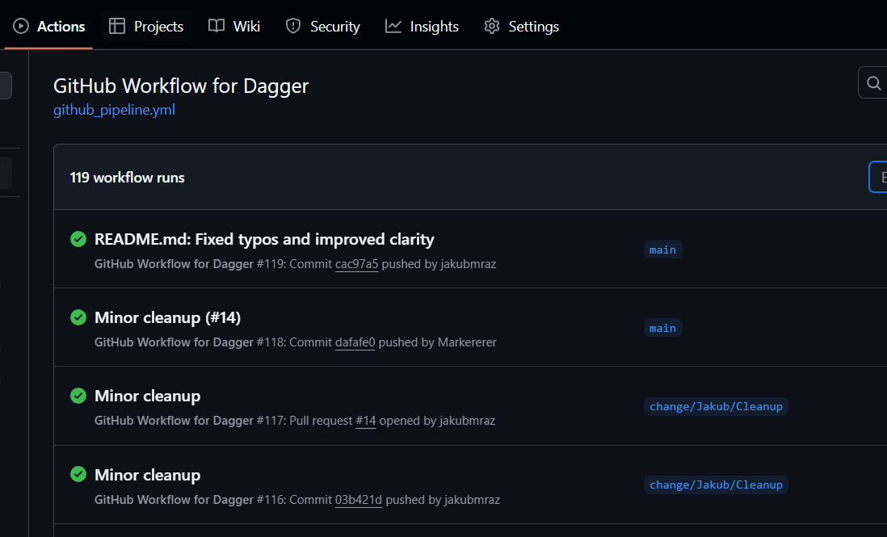
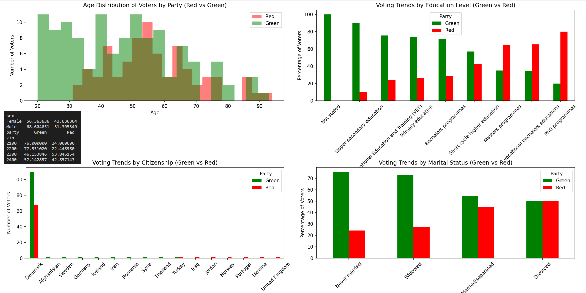
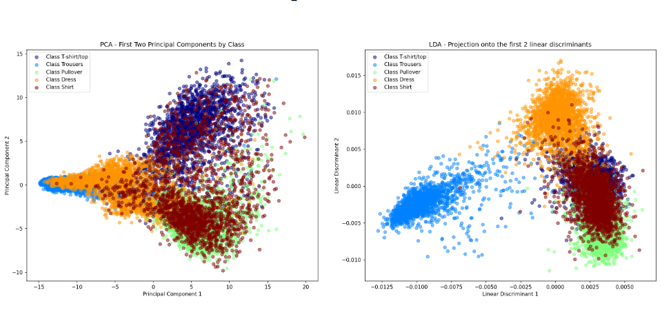
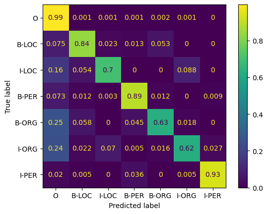

Large Scale Data Analysis
Analyzed Yelp data to identify business reviewed by influencers, compared authenticity language usage across regions and built predictive models for review ratings using Linear and Logistic Regression.

CopenhagenBuzz is an Android app that lets users discover, create, and favorite local events around Copenhagen, featuring Google Maps integration, photo uploads, and real-time updates using Firebase. Built as part of the Mobile App Development course at IT University of Copenhagen.

A collaborative MLOps project transforming a Python monolith into a modular, automated pipeline using GitHub Actions and Dagger, with model training, validation, and artifact management. Part of the Software Development & Engineering course at ITU.

A university project exploring privacy-preserving data publishing. This work implements and analyzes techniques like k-anonymity, differential privacy, and synthetic data generation to assess and mitigate re-identification risks in sensitive datasets..

This project applies machine learning techniques to classify greyscale images of clothing into five categories, using custom feature extraction, dimensionality reduction (PCA and LDA), and multiple classifiers including manually implemented Naive Bayes and neural networks. The work demonstrates and compares the effectiveness of these methods on a 15,000-image dataset from Zalando.
Natural Language Processing

This university project focused on the comparison of DistilBERT with a fine-tuned LSTM using methods from Checklist.